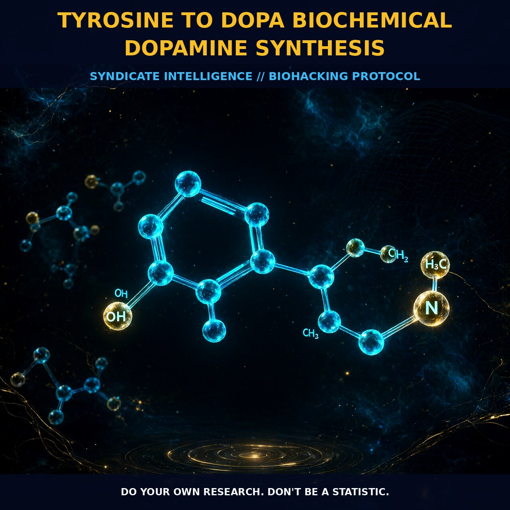

Tyrosine-to-DOPA: Engineering Homeostatic Dopamine Synthesis

1. The Biochemical Architecture of Dopamine Synthesis
The genesis of dopamine begins with phenylalanine metabolizing into L-Tyrosine within the liver, establishing tyrosine not merely as a precursor but as the critical regulatory amino acid for catecholamine production. This pathway operates on a dynamic, non-additive principle where the rate-limiting step involves the enzyme tyrosine hydroxylase converting L-tyrosine directly into L-DOPA. Once this conversion occurs, L-DOPA progresses into dopamine, which can then be further oxidized into norepinephrine and epinephrine. This biochemical cascade means that supplementation does not force receptors but instead provides the raw material necessary for the brain to synthesize neurotransmitters on demand.
Crucially, this synthesis mechanism avoids the pitfalls of direct receptor stimulation seen with compounds like exogenous L-DOPA or amphetamines. By targeting the early stages of synthesis, tyrosine allows the body to maintain its internal regulatory mechanisms, minimizing the risk of side effects associated with excessive dopaminergic activity. This homeostatic approach is particularly relevant for managing dopamine dysregulation syndrome, which can manifest as pathological gambling, hypersexuality, or aggressive behavior when levels become imbalanced. The system naturally modulates output, ensuring that increased alertness and focus remain within safe physiological parameters without inducing incapacitation.
2. Biological Leverage and Systemic Impact
L-Tyrosine functions as a potent buffer against the depletion of catecholamines during periods of intense physical or mental stress. When the body initiates a fight-or-flight response, adrenaline and norepinephrine levels spike, rapidly consuming available tyrosine stores. Supplementing with L-tyrosine ensures that sufficient material remains to support continued synthesis, thereby reducing the adverse effects of stress and fatigue on cognitive function. This is why military studies have highlighted tyrosine’s utility for soldiers in combat conditions, where sustained attention under pressure is critical for performance.
Beyond acute stress management, tyrosine supports healthy glandular function by influencing the adrenal glands, pituitary gland, and thyroid. It plays a direct role in the production of thyroxin, helping to upregulate thyroid function and naturally increase hormone production. This dual action on both neurotransmitters and endocrine signaling creates a synergistic effect where mood elevation, motivation, and energy metabolism are co-optimized. Neurohackers often report improvements in goal-oriented concentration and libido, reflecting the broader systemic impact of stabilized dopaminergic tone.
3. Tactical Implementation and Bioavailability
For those seeking to optimize dopamine synthesis, the choice between standard L-Tyrosine and N-Acetyl-L-Tyrosine (NALT) hinges on bioavailability. NALT is widely considered a more bioavailable form, particularly when utilized as a nootropic for cognitive enhancement. The typical dosing protocol for NALT involves 300 to 500 mg administered two or three times per day, allowing users to experiment with timing to find their individual sweet spot. This flexible range supports sustained catecholamine production without overwhelming the system during prolonged work or extended wakefulness periods.
Absorption is a key consideration, as tyrosine hitchhikes on the back of other amino acids like tryptophan to cross the blood-brain barrier effectively. To maximize uptake, users should consider the timing relative to protein-rich meals that might compete for transport mechanisms. While dietary sources such as almonds, bananas, dairy, eggs, and poultry provide baseline tyrosine, purified supplementation drives higher concentrations into the brain. This strategic layering of supplemental and dietary tyrosine ensures that the rate-limiting steps in dopamine synthesis are never starved for substrate, keeping cognitive performance sharp under load.
4. Prostar Life Hack
For peak cognitive leverage during high-stress windows or pre-workout phases, take 500mg of N-Acetyl-L-Tyrosine on an empty stomach with water. Avoid concurrent protein intake to prevent amino acid competition for blood-brain barrier transport, ensuring maximum concentration surge without the crash.
Prostar Life Hack
For peak cognitive leverage during high-stress windows or pre-workout phases, take 500mg of N-Acetyl-L-Tyrosine on an empty stomach with water. Avoid concurrent protein intake to prevent amino acid competition for blood-brain barrier transport, ensuring maximum concentration surge without the crash.
[ AUTHOR: LEAD TECHNICAL RESEARCHER ]